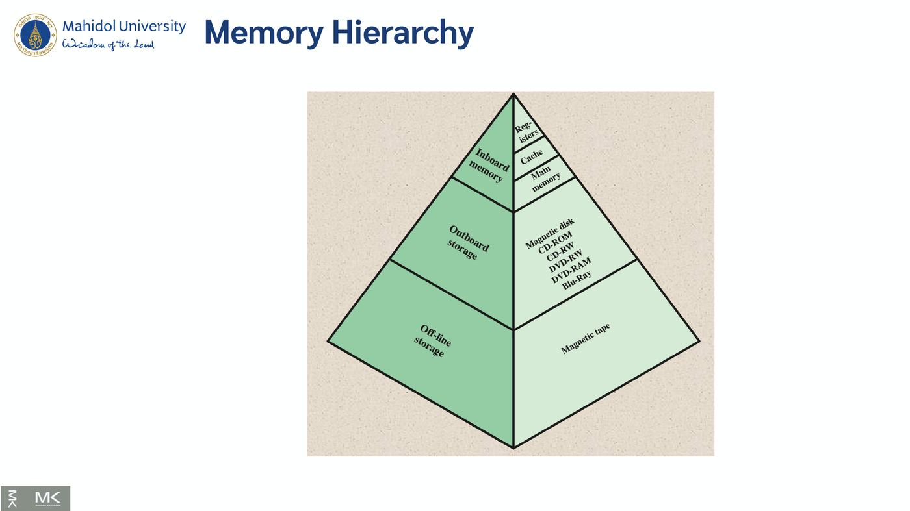
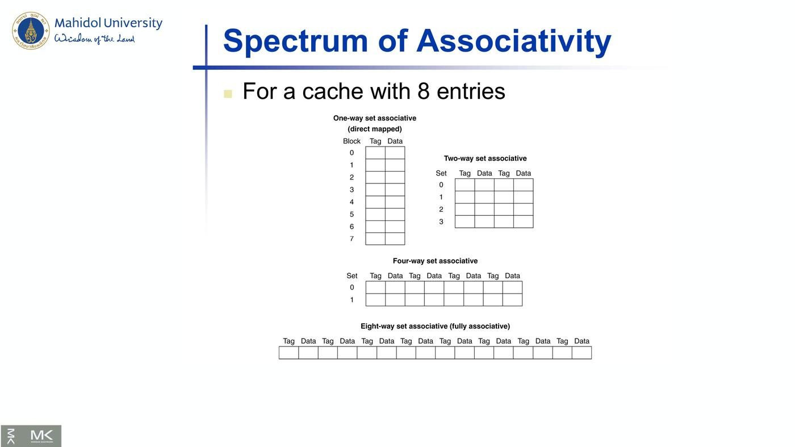
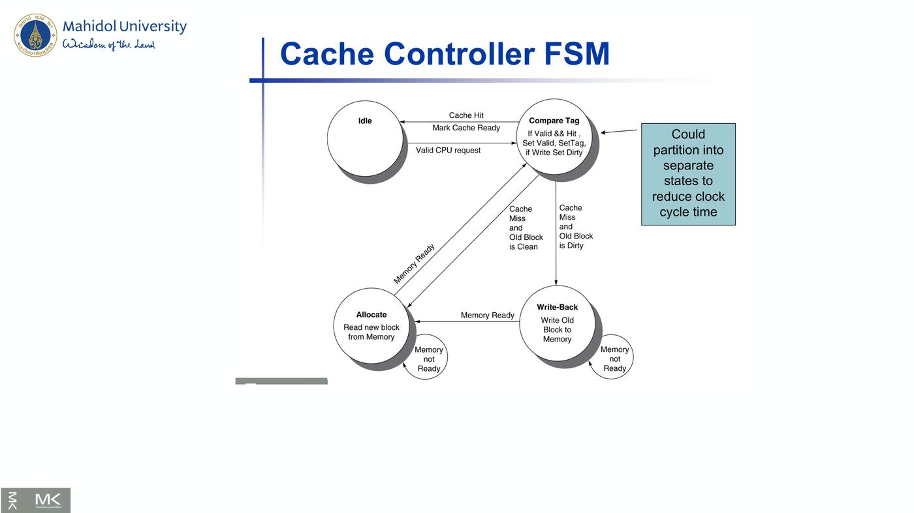

ภาพรวมบทนี้: หน่วยความจำที่เร็วจะเล็กและแพง ส่วนที่ใหญ่จะช้า บทนี้อธิบายว่า memory hierarchy ใช้ principle of locality ทำให้ดูเหมือนมีหน่วยความจำที่ทั้งเร็วและใหญ่ได้อย่างไร
เนื้อหาหลัก: เทคโนโลยีหน่วยความจำ (SRAM, DRAM, Flash, Disk), cache (direct mapped, set associative, fully associative), การวัด performance (AMAT, CPI), dependability (Hamming code), virtual machine, virtual memory (page table, TLB) และ cache coherence
บทนี้มีโจทย์คำนวณหลายแบบ ทุกตัวอย่างในสไลด์สรุปไว้ครบ
1. Chapter Overview (สไลด์ 3)
Introduction • Memory Technology • The Basic of Caches • Direct mapped cache • Associative cache: fully associative และ n-way set associative • Measuring and Improving Cache Performance • Dependable Memory Hierarchy • Virtual Machine • A common framework for memory hierarchy • Using a finite state machine to control a simple cache
2. Principle of Locality และ Memory Hierarchy (สไลด์ 4–8)
2.1 Principle of Locality (สไลด์ 4)
โปรแกรมเข้าถึงพื้นที่ address เพียง ส่วนเล็ก ๆ ในช่วงเวลาหนึ่ง
| ชนิด | ความหมาย | ตัวอย่าง (ตามสไลด์) |
|---|---|---|
| Temporal locality | ข้อมูลที่เพิ่งถูกใช้ มีแนวโน้มจะถูกใช้อีกเร็ว ๆ นี้ | คำสั่งในลูป, induction variables |
| Spatial locality | ข้อมูลที่อยู่ ใกล้ กับที่เพิ่งใช้ มีแนวโน้มจะถูกใช้เร็ว ๆ นี้ | การเข้าถึงคำสั่งตามลำดับ, ข้อมูลใน array |
💡 Temporal = "เวลา" (ใช้ซ้ำตัวเดิม) | Spatial = "พื้นที่" (ใช้ตัวข้าง ๆ)
2.2 Taking Advantage of Locality (สไลด์ 5)
- เก็บทุกอย่างไว้บน disk
- copy ข้อมูลที่เพิ่งเข้าถึง (และที่อยู่ใกล้) จาก disk ไปที่ DRAM ที่เล็กกว่า → main memory
- copy ข้อมูลที่เพิ่งเข้าถึงกว่า (และที่อยู่ใกล้) จาก DRAM ไปที่ SRAM ที่เล็กกว่า → cache memory ติดกับ CPU
2.3 Memory Hierarchy (สไลด์ 6–7)
- พีระมิด: Inboard memory (Registers, Cache, Main memory) → Outboard storage (Magnetic disk, CD-ROM, CD-RW, DVD-RW, DVD-RAM, Blu-Ray) → Off-line storage (Magnetic tape)
- CPU ↔ Cache = Word transfer (เร็ว) | Cache ↔ Main memory = Block transfer (ช้า)
- แบบ 3 ระดับ: CPU → L1 (fastest) → L2 (fast) → L3 (less fast) → Main memory (slow)

2.4 Memory Hierarchy Levels (สไลด์ 8)
- Block (aka line): หน่วยที่ใช้ copy (อาจมีหลาย word)
- ข้อมูลที่ต้องการ อยู่ ใน upper level → Hit
- Hit ratio = hits / accesses
- ข้อมูล ไม่อยู่ → Miss → copy block จาก lower level
- เวลาที่ใช้ = miss penalty
- Miss ratio = misses / accesses = 1 − hit ratio
- จากนั้นจึงส่งข้อมูลจาก upper level
3. Memory Technology (สไลด์ 9–20)
3.1 เปรียบเทียบเทคโนโลยี (สไลด์ 9)
| เทคโนโลยี | Access time | ราคา / GB |
|---|---|---|
| SRAM | 0.5ns – 2.5ns | $2000 – $5000 |
| DRAM | 50ns – 70ns | $20 – $75 |
| Magnetic disk | 5ms – 20ms | $0.20 – $2 |
- Ideal memory = access time ของ SRAM + ความจุและราคาต่อ GB ของ disk
3.2 DRAM Technology (สไลด์ 10–13)
- เก็บข้อมูลเป็น ประจุใน capacitor ใช้ transistor 1 ตัวเข้าถึงประจุ
- ต้อง refresh เป็นระยะ — อ่านค่าแล้วเขียนกลับ ทำทีละ DRAM "row"
- Advanced DRAM Organization:
- bit ใน DRAM จัดเป็น array สี่เหลี่ยม, DRAM เข้าถึงทั้ง row
- Burst mode: ส่ง word ต่อเนื่องจาก row เดียวกันด้วย latency ที่ลดลง
- DDR (Double data rate): ส่งข้อมูลทั้งขอบขาขึ้นและขาลงของ clock
- QDR (Quad data rate): แยก input และ output แบบ DDR
- DRAM Generations (สไลด์ 12):
| ปี | ความจุ | $/GB |
|---|---|---|
| 1980 | 64Kbit | $1,500,000 |
| 1983 | 256Kbit | $500,000 |
| 1985 | 1Mbit | $200,000 |
| 1989 | 4Mbit | $50,000 |
| 1992 | 16Mbit | $15,000 |
| 1996 | 64Mbit | $10,000 |
| 1998 | 128Mbit | $4,000 |
| 2000 | 256Mbit | $1,000 |
| 2004 | 512Mbit | $250 |
| 2007 | 1Gbit | $50 |
- DRAM Performance Factors (สไลด์ 13):
- Row buffer: อ่านและ refresh หลาย word พร้อมกันได้
- Synchronous DRAM: เข้าถึงต่อเนื่องเป็น burst โดยไม่ต้องส่ง address ทุกครั้ง → เพิ่ม bandwidth
- DRAM banking: เข้าถึงหลาย DRAM พร้อมกัน → เพิ่ม bandwidth
3.3 Increasing Memory Bandwidth (สไลด์ 14)
(ใช้สมมติฐานจากสไลด์ 40: 1 bus cycle ส่ง address, 15 bus cycles ต่อ DRAM access, 1 bus cycle ต่อการส่งข้อมูล, block 4 word)
| แบบ | Miss penalty | Bandwidth |
|---|---|---|
| 1-word-wide (สไลด์ 40) | 1 + 4×15 + 4×1 = 65 bus cycles | 16 bytes / 65 = 0.25 B/cycle |
| 4-word wide memory | 1 + 15 + 1 = 17 bus cycles | 16 / 17 = 0.94 B/cycle |
| 4-bank interleaved memory | 1 + 15 + 4×1 = 20 bus cycles | 16 / 20 = 0.8 B/cycle |
3.4 Flash Storage (สไลด์ 15–16)
- Nonvolatile semiconductor storage
- เร็วกว่า disk 100× – 1000×, เล็กกว่า, ใช้ไฟน้อยกว่า, ทนกว่า
- แต่ $/GB สูงกว่า (อยู่ระหว่าง disk กับ DRAM)
| NOR flash | NAND flash | |
|---|---|---|
| bit cell | เหมือน NOR gate | เหมือน NAND gate |
| การเข้าถึง | random read/write | หนาแน่นกว่า แต่เข้าถึงทีละ block |
| ราคา | — | ถูกกว่าต่อ GB |
| ใช้กับ | instruction memory ใน embedded systems | USB keys, media storage, … |
- Flash bits สึกหลังเข้าถึงหลายพันครั้ง → ไม่เหมาะแทน RAM หรือ disk โดยตรง
- Wear leveling: remap ข้อมูลไปยัง block ที่ใช้น้อยกว่า
3.5 Disk Storage (สไลด์ 17–20)
- Nonvolatile, rotating magnetic storage — มี track, sector, cylinder
- แต่ละ sector บันทึก: Sector ID, Data (512 bytes, เสนอ 4096 bytes), ECC (ใช้ซ่อน defects และ recording errors), synchronization fields และ gaps
- การเข้าถึง sector ประกอบด้วย:
- Queuing delay (ถ้ามีการเข้าถึงอื่นรออยู่)
- Seek: เลื่อนหัวอ่าน
- Rotational latency
- Data transfer
- Controller overhead
Disk Access Example (สไลด์ 19): กำหนด: sector 512B, 15,000rpm, average seek 4ms, transfer rate 100MB/s, controller overhead 0.2ms, disk ว่าง
| ส่วน | ค่า |
|---|---|
| Seek time | 4ms |
| Rotational latency | ½ / (15,000/60) = 2ms |
| Transfer time | 512 / 100MB/s = 0.005ms |
| Controller delay | 0.2ms |
| Average read time | 6.2ms |
ถ้า average seek จริงเป็น 1ms → average read time = 3.2ms
Disk Performance Issues (สไลด์ 20):
- ผู้ผลิตบอก average seek time จาก ทุก seek ที่เป็นไปได้ — แต่ locality และ OS scheduling ทำให้ค่าเฉลี่ยจริงน้อยกว่า
- Smart disk controller จัดสรร physical sectors เอง แล้วให้ host เห็นเป็น logical sector (SCSI, ATA, SATA)
- Disk drive มี cache — prefetch sector ล่วงหน้า เพื่อเลี่ยง seek และ rotational delay
4. Cache Basics (สไลด์ 21–22)
4.1 Cache Memory (สไลด์ 21)
- ระดับของ memory hierarchy ที่ใกล้ CPU ที่สุด
- ให้มีการเข้าถึง X₁, …, Xₙ₋₁, Xₙ (ภาพก่อนและหลังอ้างถึง Xₙ ซึ่งยังไม่อยู่ใน cache)
- คำถามหลัก: รู้ได้อย่างไรว่าข้อมูลอยู่ใน cache? และ ต้องหาที่ไหน?
4.2 Elements of Cache Design (สไลด์ 22)
| หัวข้อ | ตัวเลือก |
|---|---|
| Cache Addresses | Logical, Physical |
| Cache Size | — |
| Mapping Function | Direct, Associative, Set Associative |
| Replacement Algorithm | LRU (Least recently used), FIFO (First in first out), LFU (Least frequently used), Random |
| Write Policy | Write through, Write back |
| Line Size | — |
| Number of caches | Single or two level, Unified or split |
5. Direct Mapped Cache (สไลด์ 23–32)
5.1 หลักการ (สไลด์ 23–24)
- ตำแหน่งใน cache ถูกกำหนดจาก address — direct mapped มีที่ให้เลือกแค่ที่เดียว
- Cache index = (Block address) modulo (#Blocks in cache)
- #Blocks เป็นเลขยกกำลังของ 2 → ใช้ bit ต่ำ (low-order bits) ของ address
- Tag: เก็บ block address ไว้ด้วยเพื่อรู้ว่า block ไหนอยู่ในช่องนั้น — ที่จริงเก็บแค่ bit สูง (high-order bits)
- Valid bit: 1 = มีข้อมูล, 0 = ไม่มี — เริ่มต้นเป็น 0
5.2 Cache Example (สไลด์ 25–30)
8 blocks, 1 word/block, direct mapped — address 5 bit: 2 bit บน = tag, 3 bit ล่าง = index
| Word addr | Binary addr | Hit/miss | Cache block | เกิดอะไรขึ้น |
|---|---|---|---|---|
| 22 | 10 110 | Miss | 110 | ใส่ tag 10, Mem[10110] |
| 26 | 11 010 | Miss | 010 | ใส่ tag 11, Mem[11010] |
| 22 | 10 110 | Hit | 110 | |
| 26 | 11 010 | Hit | 010 | |
| 16 | 10 000 | Miss | 000 | ใส่ tag 10, Mem[10000] |
| 3 | 00 011 | Miss | 011 | ใส่ tag 00, Mem[00011] |
| 16 | 10 000 | Hit | 000 | |
| 18 | 10 010 | Miss | 010 | แทนที่ tag 11 ด้วย tag 10 → Mem[10010] |
สถานะ cache สุดท้าย:
| Index | V | Tag | Data |
|---|---|---|---|
| 000 | Y | 10 | Mem[10000] |
| 001 | N | ||
| 010 | Y | 10 | Mem[10010] |
| 011 | Y | 00 | Mem[00011] |
| 100–101 | N | ||
| 110 | Y | 10 | Mem[10110] |
| 111 | N |
💡 วิธีทำ: แปลง address เป็น binary → 3 bit ขวาคือ index → ดูช่องนั้นว่า valid และ tag ตรงไหม → ตรง = hit, ไม่ตรง = miss แล้วเขียนทับ
5.3 Address Subdivision (สไลด์ 31)
ภาพ: address 64 bit แบ่งเป็น Tag (52 bit) | Index (10 bit, bit 11–2) | Byte offset (2 bit) → cache 1024 entries (Index, Valid, Tag, Data 32 bit) → เทียบ tag (=) AND valid → Hit, และส่ง Data ออก
5.4 Example: Larger Block Size (สไลด์ 32)
64 blocks, 16 bytes/block — address 1200 map ไป block ไหน?
- Block address = ⌊1200 / 16⌋ = 75
- Block number = 75 modulo 64 = 11
- การแบ่ง address: Offset 4 bits (bit 0–3) | Index 6 bits (bit 4–9) | Tag 22 bits (bit 10–31)
Block address = ⌊ address / Number of bytes per block ⌋
Block number = Block address modulo Number of blocks
6. Block Size, Cache Misses, Write Policy (สไลด์ 33–39)
6.1 Block Size Considerations (สไลด์ 33)
- block ใหญ่ขึ้น ควรลด miss rate เพราะ spatial locality
- แต่ใน cache ขนาดคงที่:
- block ใหญ่ → จำนวน block น้อยลง → แย่งกันมากขึ้น → miss rate เพิ่ม
- block ใหญ่ → pollution
- miss penalty มากขึ้น — อาจลบล้างประโยชน์ของ miss rate ที่ลดลง
- Early restart และ critical-word-first ช่วยได้
6.2 Cache Misses (สไลด์ 34)
- Cache hit → CPU ทำงานต่อตามปกติ
- Cache miss:
- Stall CPU pipeline
- Fetch block จากระดับถัดไป
- Instruction cache miss → เริ่ม instruction fetch ใหม่
- Data cache miss → ทำ data access ให้เสร็จ
6.3 Write-Through (สไลด์ 35)
- เมื่อ write hit ถ้าแก้แค่ block ใน cache → cache กับ memory จะ ไม่ตรงกัน (inconsistent)
- Write through: แก้ memory ด้วย → แต่ทำให้ write ช้าลง
- ตัวอย่าง: base CPI = 1, store 10% ของคำสั่ง, เขียน memory 100 cycles → Effective CPI = 1 + 0.1 × 100 = 11
- ทางแก้: write buffer — เก็บข้อมูลที่รอเขียนลง memory, CPU ทำงานต่อทันที, stall เฉพาะเมื่อ write buffer เต็ม
6.4 Write-Back (สไลด์ 36)
- เมื่อ write hit แก้เฉพาะ block ใน cache
- ติดตามว่าแต่ละ block dirty หรือไม่
- เมื่อ block ที่ dirty ถูกแทนที่ → เขียนกลับลง memory
- ใช้ write buffer ให้ block ที่จะแทนที่ถูกอ่านก่อนได้
6.5 Write Allocation (สไลด์ 37)
เมื่อ write miss จะทำอย่างไร?
- สำหรับ write-through:
- Allocate on miss: fetch block มา
- Write around: ไม่ fetch block (เพราะโปรแกรมมักเขียนทั้ง block ก่อนอ่าน เช่น การ initialize)
- สำหรับ write-back: ปกติ fetch block มา
| Write-through | Write-back | |
|---|---|---|
| write hit | แก้ cache + memory | แก้ cache อย่างเดียว, ตั้ง dirty |
| ข้อเสีย/ทางแก้ | write ช้า → ใช้ write buffer | ต้องเก็บสถานะ dirty |
| write miss | allocate on miss หรือ write around | ปกติ fetch block |
6.6 Example: Intrinsity FastMATH (สไลด์ 38–39)
- Embedded MIPS processor, 12-stage pipeline, เข้าถึง instruction และ data ทุก cycle
- Split cache: แยก I-cache และ D-cache — แต่ละตัว 16KB: 256 blocks × 16 words/block
- D-cache: write-through หรือ write-back
- SPEC2000 miss rates: I-cache 0.4%, D-cache 11.4%, weighted average 3.2%
- ภาพ: address แบ่งเป็น Tag 18 bit | Index 8 bit | Block offset 4 bit | Byte offset 2 bit, 256 entries, ใช้ Mux เลือก word
7. Main Memory Supporting Caches (สไลด์ 40)
- ใช้ DRAM เป็น main memory — ความกว้างคงที่ (เช่น 1 word) เชื่อมด้วย bus ที่มี clock (มักช้ากว่า clock ของ CPU)
- ตัวอย่างการอ่าน cache block:
- 1 bus cycle ส่ง address
- 15 bus cycles ต่อ DRAM access
- 1 bus cycle ต่อการส่งข้อมูล
- block 4 word, DRAM กว้าง 1 word:
- Miss penalty = 1 + 4×15 + 4×1 = 65 bus cycles
- Bandwidth = 16 bytes / 65 cycles = 0.25 B/cycle
8. Measuring Cache Performance (สไลด์ 41–44)
8.1 องค์ประกอบของ CPU time (สไลด์ 41)
- Program execution cycles (รวม cache hit time)
- Memory stall cycles (ส่วนใหญ่มาจาก cache misses)
Memory stall cycles = (Memory accesses / Program) × Miss rate × Miss penalty
= (Instructions / Program) × (Misses / Instruction) × Miss penalty
8.2 Cache Performance Example (สไลด์ 42)
กำหนด: I-cache miss rate = 2%, D-cache miss rate = 4%, miss penalty = 100 cycles, base CPI (ideal cache) = 2, load & store = 36% ของคำสั่ง
| ส่วน | การคำนวณ | ค่า |
|---|---|---|
| I-cache miss cycles/instruction | 0.02 × 100 | 2 |
| D-cache miss cycles/instruction | 0.36 × 0.04 × 100 | 1.44 |
| Actual CPI | 2 + 2 + 1.44 | 5.44 |
| Ideal CPU เร็วกว่า | 5.44 / 2 | 2.72 เท่า |
⚠️ D-cache ต้องคูณ 0.36 (สัดส่วนคำสั่ง load/store) แต่ I-cache ไม่ต้อง เพราะทุกคำสั่งต้อง fetch
8.3 Average Memory Access Time (สไลด์ 43)
- hit time ก็สำคัญต่อ performance
AMAT = Hit time + Miss rate × Miss penalty
ตัวอย่าง: clock 1ns, hit time = 1 cycle, miss penalty = 20 cycles, I-cache miss rate = 5%
- AMAT = 1 + 0.05 × 20 = 2ns = 2 cycles ต่อคำสั่ง
8.4 Performance Summary (สไลด์ 44)
- เมื่อ CPU เร็วขึ้น miss penalty ยิ่งมีผลมาก
- ลด base CPI → สัดส่วนเวลาที่ใช้กับ memory stall มากขึ้น
- เพิ่ม clock rate → memory stall กิน CPU cycles มากขึ้น
- ประเมิน system performance ต้องไม่มองข้าม cache behavior
9. Associative Caches (สไลด์ 45–51)
9.1 ประเภท (สไลด์ 45–47)
| แบบ | การวาง block | การค้นหา | ต้นทุน |
|---|---|---|---|
| Direct mapped | ได้ที่เดียว | ดู 1 ช่อง | ถูก |
| n-way set associative | แต่ละ set มี n entries — set = (Block number) modulo (#Sets) | ค้นทุก entry ใน set พร้อมกัน | n comparators (ถูกกว่า) |
| Fully associative | วางที่ ไหนก็ได้ | ค้น ทุก entry พร้อมกัน | comparator ทุก entry (แพง) |
Spectrum of Associativity — cache 8 entries (สไลด์ 47):
- One-way set associative (direct mapped): 8 blocks
- Two-way set associative: 4 sets
- Four-way set associative: 2 sets
- Eight-way set associative (fully associative): 1 set

9.2 Associativity Example (สไลด์ 48–49)
เทียบ cache 4 blocks, ลำดับ block access: 0, 8, 0, 6, 8
Direct mapped (index = block mod 4):
| Block | Index | Hit/miss | Cache content after (ช่อง 0, 1, 2, 3) |
|---|---|---|---|
| 0 | 0 | miss | Mem[0] |
| 8 | 0 | miss | Mem[8] |
| 0 | 0 | miss | Mem[0] |
| 6 | 2 | miss | Mem[0], -, Mem[6] |
| 8 | 0 | miss | Mem[8], -, Mem[6] |
| → 5 misses |
2-way set associative (set = block mod 2):
| Block | Set | Hit/miss | Set 0 |
|---|---|---|---|
| 0 | 0 | miss | Mem[0] |
| 8 | 0 | miss | Mem[0], Mem[8] |
| 0 | 0 | hit | Mem[0], Mem[8] |
| 6 | 0 | miss | Mem[0], Mem[6] (แทน 8) |
| 8 | 0 | miss | Mem[8], Mem[6] (แทน 0) |
| → 4 misses, 1 hit |
Fully associative:
| Block | Hit/miss | Content |
|---|---|---|
| 0 | miss | Mem[0] |
| 8 | miss | Mem[0], Mem[8] |
| 0 | hit | Mem[0], Mem[8] |
| 6 | miss | Mem[0], Mem[8], Mem[6] |
| 8 | hit | Mem[0], Mem[8], Mem[6] |
| → 3 misses, 2 hits |
9.3 How Much Associativity (สไลด์ 50)
- associativity เพิ่ม → miss rate ลด แต่ได้ผลน้อยลงเรื่อย ๆ (diminishing returns)
- จำลองระบบ D-cache 64KB, block 16 words, SPEC2000:
| Associativity | Miss rate |
|---|---|
| 1-way | 10.3% |
| 2-way | 8.6% |
| 4-way | 8.3% |
| 8-way | 8.1% |
9.4 Set Associative Cache Organization (สไลด์ 51)
ภาพ 4-way set associative: address แบ่ง Tag 22 bit | Index 8 bit (256 sets) → อ่าน 4 ทางพร้อมกัน เทียบ tag 4 ตัว → OR เป็น Hit และใช้ 4-to-1 multiplexor เลือก Data
10. Replacement Policy และ Multilevel Caches (สไลด์ 52–56)
10.1 Replacement Policy (สไลด์ 52)
- Direct mapped: ไม่มีทางเลือก
- Set associative:
- เลือก entry ที่ไม่ valid ก่อน (ถ้ามี)
- ไม่งั้นเลือกจาก entries ใน set:
- LRU (Least-recently used): เลือกตัวที่ไม่ได้ใช้นานที่สุด — ง่ายสำหรับ 2-way, พอจัดการได้สำหรับ 4-way, ยากเกินไปถ้ามากกว่านั้น
- Random: ได้ performance ใกล้เคียง LRU เมื่อ associativity สูง
10.2 Multilevel Caches (สไลด์ 53)
- Primary cache (L1) ติดกับ CPU — เล็กแต่เร็ว
- L2 cache รับ miss จาก L1 — ใหญ่กว่า ช้ากว่า แต่ยังเร็วกว่า main memory
- Main memory รับ miss จาก L2
- ระบบระดับสูงบางระบบมี L3
10.3 Multilevel Cache Example (สไลด์ 54–55)
กำหนด: base CPI = 1, clock 4GHz (cycle = 0.25ns), miss rate/instruction = 2%, main memory access = 100ns
มีแค่ primary cache:
- Miss penalty = 100ns / 0.25ns = 400 cycles
- Effective CPI = 1 + 0.02 × 400 = 9
เพิ่ม L2: access time 5ns, global miss rate ถึง main memory = 0.5%
- L1 miss แต่ L2 hit: penalty = 5ns / 0.25ns = 20 cycles
- L1 miss และ L2 miss: extra penalty = 500 cycles (ตามสไลด์)
- CPI = 1 + 0.02 × 20 + 0.005 × 400 = 3.4
- Performance ratio = 9 / 3.4 = 2.6
⚠️ สไลด์เขียน "Extra penalty = 500 cycles" แต่ในสูตร CPI ใช้ 0.005 × 400 — ถ้าทำโจทย์ให้ใช้ตามสูตรในสไลด์ (ได้ 3.4) หรือถามอาจารย์
10.4 Multilevel Cache Considerations (สไลด์ 56)
- Primary cache: เน้น hit time ต่ำที่สุด
- L2 cache: เน้น miss rate ต่ำ เพื่อเลี่ยงการเข้า main memory — hit time มีผลโดยรวมน้อยกว่า
- ผล: L1 มักเล็กกว่า cache แบบชั้นเดียว | L1 block size เล็กกว่า L2 block size
11. Interactions with Advanced CPUs และ Software (สไลด์ 57–62)
11.1 Advanced CPUs (สไลด์ 57)
- Out-of-order CPUs ทำคำสั่งอื่นต่อได้ระหว่าง cache miss
- pending store รอใน load/store unit
- คำสั่งที่ขึ้นต่อกันรอใน reservation stations
- คำสั่งที่ไม่ขึ้นต่อกันทำต่อได้
- ผลของ miss ขึ้นกับ data flow ของโปรแกรม → วิเคราะห์ยากมาก → ใช้ system simulation
11.2 Interactions with Software (สไลด์ 58)
- Misses ขึ้นกับรูปแบบการเข้าถึง memory: algorithm behavior และ compiler optimization for memory access
- กราฟเทียบ Radix Sort กับ Quicksort (instructions/item, clock cycles/item, cache misses/item) ตามขนาดข้อมูล
11.3 Software Optimization via Blocking (สไลด์ 59–62)
- เป้าหมาย: เข้าถึงข้อมูลให้มากที่สุดก่อนที่มันจะถูกแทนที่
- inner loops ของ DGEMM:
for (int j = 0; j < n; ++j) {
double cij = C[i+j*n];
for( int k = 0; k < n; k++ )
cij += A[i+k*n] * B[k+j*n];
C[i+j*n] = cij;
}
- DGEMM Access Pattern (สไลด์ 60): ภาพ array C, A, B แสดง older accesses กับ new accesses
- Cache Blocked DGEMM (สไลด์ 61):
#define BLOCKSIZE 32— ฟังก์ชันdo_blockคำนวณทีละ block ขนาด BLOCKSIZE × BLOCKSIZE และdgemmวนลูป sj, si, sk ทีละ BLOCKSIZE แล้วเรียก do_block - Blocked DGEMM Access Pattern (สไลด์ 62): กราฟ GFLOPS — Unoptimized: 32x32 = 1.7, 160x160 = 1.5, 480x480 = 1.3, 960x960 = 0.8 | Blocked: 1.7, 1.6, 1.6, 1.5
💡 สิ่งที่กราฟแสดง: เมื่อ matrix ใหญ่ขึ้น แบบ unoptimized ช้าลงมาก แต่แบบ blocked ยังคงความเร็วได้ใกล้เดิม
12. Dependability (สไลด์ 63–68)
12.1 Dependability (สไลด์ 63)
- สถานะ 2 แบบ: Service accomplishment (ให้บริการตามที่กำหนด) ↔ Service interruption (เบี่ยงเบนจากที่กำหนด)
- Failure: จาก accomplishment → interruption
- Restoration: จาก interruption → accomplishment
- Fault: ความล้มเหลวของส่วนประกอบ — อาจหรืออาจไม่ ทำให้ระบบล้มเหลว
12.2 Dependability Measures (สไลด์ 64)
Reliability: MTTF (mean time to failure)
Service interruption: MTTR (mean time to repair)
MTBF = MTTF + MTTR (mean time between failures)
Availability = MTTF / (MTTF + MTTR)
เพิ่ม availability:
- เพิ่ม MTTF: fault avoidance, fault tolerance, fault forecasting
- ลด MTTR: เครื่องมือและกระบวนการวินิจฉัยและซ่อมที่ดีขึ้น
12.3 Hamming SEC Code (สไลด์ 65–68)
- Hamming distance: จำนวน bit ที่ต่างกันระหว่าง 2 bit patterns
- Minimum distance = 2 → ตรวจจับ error 1 bit ได้ (เช่น parity code)
- Minimum distance = 3 → แก้ error 1 bit (SEC) และตรวจจับ error 2 bit ได้
Encoding SEC (สไลด์ 66):
- นับตำแหน่ง bit จาก 1 ทางซ้าย
- ตำแหน่งที่เป็น กำลังของ 2 (1, 2, 4, 8, …) เป็น parity bits
- parity แต่ละตัวตรวจ data bits บางตัว (ตาราง 12 ตำแหน่ง: p1 p2 d1 p4 d2 d3 d4 p8 d5 d6 d7 d8)
| Parity | ตรวจตำแหน่ง (ตามตารางในสไลด์) |
|---|---|
| p1 | 1, 3, 5, 7, 9, 11 |
| p2 | 2, 3, 6, 7, 10, 11 |
| p4 | 4, 5, 6, 7, 12 |
| p8 | 8, 9, 10, 11, 12 |
Decoding SEC (สไลด์ 67):
- ค่าของ parity bits บอกว่า bit ไหนผิด (ใช้การนับตำแหน่งเดียวกับตอน encode)
- Parity bits = 0000 → ไม่มี error
- Parity bits = 1010 → bit 10 ถูกพลิก
SEC/DED Code (สไลด์ 68):
- เพิ่ม parity bit อีก 1 ตัวสำหรับทั้ง word (pn) → Hamming distance = 4
- ให้ H = SEC parity bits:
| H | pn | ความหมาย |
|---|---|---|
| even | even | ไม่มี error |
| odd | odd | error 1 bit แก้ได้ |
| even | odd | error ที่ bit pn |
| odd | even | เกิด double error |
- ECC DRAM ใช้ SEC/DED โดยใช้ 8 bits ปกป้องทุก 64 bits
⚠️ หัวสไลด์ 68 เขียนว่า "SEC/DEC Code"
13. Virtual Machines (สไลด์ 69–72)
13.1 Virtual Machines (สไลด์ 69)
- Host computer จำลอง (emulate) guest OS และทรัพยากรเครื่อง
- แยก guest หลายตัวออกจากกันได้ดีขึ้น → เลี่ยงปัญหา security และ reliability, ช่วยแบ่งปันทรัพยากร
- virtualization กระทบ performance บ้าง แต่ทำได้กับคอมพิวเตอร์สมรรถนะสูงสมัยใหม่
- ตัวอย่าง: IBM VM/370 (เทคโนโลยีปี 1970s!), VMWare, Microsoft Virtual PC
13.2 Virtual Machine Monitor (VMM) (สไลด์ 70)
- map ทรัพยากรเสมือน → ทรัพยากรจริง (memory, I/O devices, CPUs)
- Guest code รันบนเครื่องจริงใน user mode
- Trap ไปที่ VMM เมื่อใช้ privileged instructions หรือเข้าถึง protected resources
- Guest OS อาจต่างจาก host OS
- VMM จัดการ I/O devices จริง และ emulate virtual I/O devices ทั่วไปให้ guest
13.3 Example: Timer Virtualization (สไลด์ 71)
- เครื่องจริง: เมื่อ timer interrupt → OS พัก process ปัจจุบัน จัดการ interrupt เลือกและเริ่ม process ถัดไป
- มี VMM: VMM พัก VM ปัจจุบัน จัดการ interrupt เลือกและเริ่ม VM ถัดไป
- ถ้า VM ต้องการ timer interrupts → VMM emulate virtual timer และ emulate interrupt ให้ VM เมื่อ physical timer interrupt เกิด
13.4 Instruction Set Support (สไลด์ 72)
- มี User mode และ System mode
- Privileged instructions ใช้ได้เฉพาะ system mode — ถ้ารันใน user mode จะ trap ไป system
- ทรัพยากรจริงทั้งหมดเข้าถึงได้ผ่าน privileged instructions เท่านั้น (รวม page tables, interrupt controls, I/O registers)
- การรองรับ virtualization กลับมาได้รับความสนใจ — ISA ปัจจุบัน (เช่น x86) กำลังปรับตัว
14. Virtual Memory (สไลด์ 73–86)
14.1 แนวคิด (สไลด์ 73)
- ใช้ main memory เป็น "cache" ของ secondary (disk) storage
- จัดการร่วมกันโดย CPU hardware และ OS
- หลายโปรแกรมใช้ main memory ร่วมกัน — แต่ละตัวมี private virtual address space เก็บ code และ data ที่ใช้บ่อย และ ถูกปกป้อง จากโปรแกรมอื่น
- CPU และ OS แปล virtual address → physical address
- "block" ของ VM เรียกว่า page
- "miss" ของการแปลเรียกว่า page fault
| Cache | Virtual memory |
|---|---|
| block | page |
| miss | page fault |
14.2 Address Translation (สไลด์ 74)
- page ขนาดคงที่ (เช่น 4K)
- Virtual address (bit 47–0) = Virtual page number + Page offset (bit 11–0)
- Translation แปลงเฉพาะ virtual page number → Physical page number; page offset คงเดิม → Physical address (bit 39–0)
14.3 Page Fault Penalty (สไลด์ 75)
- เมื่อ page fault ต้อง fetch page จาก disk → ใช้ หลายล้าน clock cycles และจัดการโดย OS code
- พยายามลด page fault rate: fully associative placement, smart replacement algorithms
14.4 Page Tables (สไลด์ 76–78)
- เก็บข้อมูลการวาง page — array ของ page table entries (PTE) ที่ index ด้วย virtual page number
- Page table register ใน CPU ชี้ไปที่ page table ใน physical memory
- ถ้า page อยู่ใน memory → PTE เก็บ physical page number + status bits (referenced, dirty, …)
- ถ้า page ไม่อยู่ → PTE อ้างถึงตำแหน่งใน swap space บน disk
- ภาพสไลด์ 77: page table register + virtual page number (36 bit) → page table (มี Valid bit) → physical page number (28 bit) + page offset (12 bit) | "If 0 then page is not present in memory"
- ภาพสไลด์ 78: page table ที่ Valid = 1 ชี้ไป physical memory, Valid = 0 ชี้ไป disk storage
14.5 Replacement and Writes (สไลด์ 79)
- เพื่อลด page fault rate ใช้ LRU replacement
- Reference bit (use bit) ใน PTE ถูกตั้งเป็น 1 เมื่อเข้าถึง page
- OS clear เป็น 0 เป็นระยะ
- page ที่ reference bit = 0 → ไม่ได้ใช้เร็ว ๆ นี้
- การเขียน disk ใช้หลายล้าน cycles — เขียนทั้ง block ทีเดียว
- Write through ใช้ไม่ได้ในทางปฏิบัติ → ใช้ write-back
- Dirty bit ใน PTE ถูกตั้งเมื่อ page ถูกเขียน
14.6 TLB — Fast Translation (สไลด์ 80–81)
- การแปล address ดูเหมือนต้องเข้าถึง memory เพิ่ม: 1 ครั้งเพื่อเข้าถึง PTE แล้วอีกครั้งเพื่อเข้าถึงข้อมูลจริง
- แต่การเข้าถึง page table มี locality ดี → ใช้ cache ของ PTE ที่เร็วใน CPU เรียกว่า TLB (Translation Look-aside Buffer)
- ค่าทั่วไป: 16–512 PTEs, hit 0.5–1 cycle, miss 10–100 cycles, miss rate 0.01%–1%
- miss จัดการได้ทั้งโดย hardware หรือ software
- ภาพสไลด์ 81: TLB มี Valid, Dirty, Ref, Tag, Physical page address → physical memory; ถ้า TLB ไม่มีก็ไปที่ page table → physical memory หรือ disk
14.7 TLB Misses (สไลด์ 82–83)
- ถ้า page อยู่ใน memory: load PTE จาก memory แล้วลองใหม่
- ทำใน hardware ได้ (ซับซ้อนถ้าโครงสร้าง page table ซับซ้อน)
- หรือใน software: ยก exception พิเศษพร้อม handler ที่ optimize แล้ว
- ถ้า page ไม่อยู่ใน memory (page fault): OS fetch page และ update page table แล้ว restart คำสั่งที่ fault
- TLB Miss Handler:
- TLB miss บอกว่า: page อยู่แต่ PTE ไม่อยู่ใน TLB หรือ page ไม่อยู่
- ต้องรู้ว่า TLB miss ก่อนที่ destination register จะถูกเขียนทับ
- ยก exception → handler copy PTE จาก memory ไป TLB → restart คำสั่ง
- ถ้า page ไม่อยู่จะเกิด page fault
14.8 Page Fault Handler (สไลด์ 84)
- ใช้ virtual address ที่ fault หา PTE
- หาตำแหน่ง page บน disk
- เลือก page ที่จะแทนที่ — ถ้า dirty ให้เขียนลง disk ก่อน
- อ่าน page เข้า memory และ update page table
- ทำให้ process พร้อมรันอีกครั้ง
- Restart จากคำสั่งที่ fault
14.9 TLB and Cache Interaction (สไลด์ 85)
- ถ้า cache tag ใช้ physical address → ต้องแปลก่อนค้นหา cache
- ทางเลือก: ใช้ virtual address tag → ซับซ้อนเพราะ aliasing (virtual address ต่างกันชี้ physical address เดียวกันที่แชร์)
14.10 Memory Protection (สไลด์ 86)
- task ต่าง ๆ แชร์บางส่วนของ virtual address space ได้ แต่ต้องป้องกันการเข้าถึงผิดพลาด → ต้องให้ OS ช่วย
- Hardware support สำหรับ OS protection:
- Privileged supervisor mode (kernel mode)
- Privileged instructions
- page tables และ state อื่น ๆ เข้าถึงได้เฉพาะ supervisor mode
- System call exception (เช่น ecall ใน RISC-V)
15. Common Framework for Memory Hierarchies (สไลด์ 87–93)
15.1 The BIG Picture (สไลด์ 87)
หลักการเดียวกันใช้ได้ทุกระดับของ memory hierarchy (ตามแนวคิด caching) — ทุกระดับต้องตอบ 4 คำถาม:
- Block placement
- Finding a block
- Replacement on a miss
- Write policy
15.2 Block Placement (สไลด์ 88)
- กำหนดโดย associativity:
- Direct mapped (1-way): 1 ตัวเลือก
- n-way set associative: n ตัวเลือกใน set
- Fully associative: ที่ไหนก็ได้
- associativity สูง → miss rate ลด แต่ ความซับซ้อน ต้นทุน และ access time เพิ่ม
15.3 Finding a Block (สไลด์ 89)
| Associativity | Location method | Tag comparisons |
|---|---|---|
| Direct mapped | Index | 1 |
| n-way set associative | Set index แล้วค้นใน set | n |
| Fully associative | ค้นทุก entry | #entries |
| Fully associative | Full lookup table | 0 |
- Hardware caches: ลดจำนวนการเทียบเพื่อลดต้นทุน
- Virtual memory: full table lookup ทำให้ fully associative เป็นไปได้ → ได้ miss rate ต่ำ
15.4 Replacement (สไลด์ 90)
- LRU: hardware ซับซ้อนและแพงเมื่อ associativity สูง
- Random: ใกล้เคียง LRU, implement ง่ายกว่า
- Virtual memory: ใช้ LRU approximation โดยมี hardware support
15.5 Write Policy (สไลด์ 91)
- Write-through: update ทั้ง upper และ lower level — replacement ง่าย แต่อาจต้องมี write buffer
- Write-back: update เฉพาะ upper level, update lower level เมื่อ block ถูกแทนที่ — ต้องเก็บ state มากกว่า
- Virtual memory: ใช้ได้แค่ write-back เพราะ disk write latency สูง
15.6 Sources of Misses — 3C (สไลด์ 92)
| Miss | สาเหตุ |
|---|---|
| Compulsory (cold start) | เข้าถึง block ครั้งแรก |
| Capacity | cache มีขนาดจำกัด — block ที่ถูกแทนที่ไปถูกเรียกใช้อีก |
| Conflict (collision) | ใน cache ที่ไม่ใช่ fully associative — แย่ง entries ใน set เดียวกัน (จะไม่เกิดใน fully associative ขนาดเท่ากัน) |
15.7 Cache Design Trade-offs (สไลด์ 93)
| การเปลี่ยนแปลง | ผลต่อ miss rate | ผลเสีย |
|---|---|---|
| เพิ่ม cache size | ลด capacity misses | อาจเพิ่ม access time |
| เพิ่ม associativity | ลด conflict misses | อาจเพิ่ม access time |
| เพิ่ม block size | ลด compulsory misses | เพิ่ม miss penalty; block ใหญ่มากอาจเพิ่ม miss rate เพราะ pollution |
16. Cache Control ด้วย FSM (สไลด์ 94–97)
16.1 Example cache characteristics (สไลด์ 94)
- Direct-mapped, write-back, write allocate
- Block size: 4 words (16 bytes) | Cache size: 16 KB (1024 blocks)
- 32-bit byte addresses | Valid bit และ dirty bit ต่อ block
- Blocking cache: CPU รอจนการเข้าถึงเสร็จ
- การแบ่ง address: Offset 4 bits (0–3) | Index 10 bits (4–13) | Tag 18 bits (14–31)
16.2 Interface Signals (สไลด์ 95)
- CPU ↔ Cache: Read/Write, Valid, Address (32), Write Data (32), Read Data (32), Ready
- Cache ↔ Memory: Read/Write, Valid, Address (32), Write Data (128), Read Data (128), Ready — ใช้หลาย cycle ต่อการเข้าถึง
16.3 Finite State Machines (สไลด์ 96)
- ใช้ FSM เรียงลำดับขั้นตอนควบคุม
- ชุดของ states เปลี่ยนสถานะทุก clock edge, ค่า state เข้ารหัสเป็น binary, state ปัจจุบันเก็บใน register
- Next state = fn(current state, current inputs)
- Control output signals = fo(current state)
16.4 Cache Controller FSM (สไลด์ 97)
| State | ทำอะไร | ไป state ไหน |
|---|---|---|
| Idle | รอ | Valid CPU request → Compare Tag |
| Compare Tag | ถ้า Valid && Hit: set Valid, set Tag, ถ้า write ตั้ง Dirty | Cache hit → mark cache ready → Idle; miss + old block clean → Allocate; miss + old block dirty → Write-Back |
| Write-Back | เขียน block เก่าลง memory | Memory not ready → วนอยู่; Memory ready → Allocate |
| Allocate | อ่าน block ใหม่จาก memory | Memory not ready → วนอยู่; Memory ready → Compare Tag |
- หมายเหตุในสไลด์: อาจแบ่งเป็น states แยกเพื่อลด clock cycle time

17. Cache Coherence และ Memory Consistency (สไลด์ 98–102)
17.1 Cache Coherence Problem (สไลด์ 98)
2 CPU cores แชร์ physical address space, ใช้ write-through caches:
| Time step | Event | CPU A's cache | CPU B's cache | Memory |
|---|---|---|---|---|
| 0 | 0 | |||
| 1 | CPU A reads X | 0 | 0 | |
| 2 | CPU B reads X | 0 | 0 | 0 |
| 3 | CPU A writes 1 to X | 1 | 0 | 1 |
| → CPU B ยังเห็นค่าเก่า (0) |
17.2 Coherence Defined (สไลด์ 99)
- ไม่เป็นทางการ: การอ่านคืนค่าที่ถูกเขียนล่าสุด
- เป็นทางการ:
- P เขียน X แล้ว P อ่าน X (ไม่มีการเขียนแทรก) → อ่านได้ค่าที่เขียน
- P1 เขียน X แล้ว P2 อ่าน X (นานพอ) → อ่านได้ค่าที่เขียน (เทียบกับ CPU B อ่าน X หลัง step 3)
- P1 เขียน X, P2 เขียน X → ทุก processor เห็นการเขียนในลำดับเดียวกัน → ได้ค่าสุดท้ายของ X ตรงกัน
17.3 Cache Coherence Protocols (สไลด์ 100)
operations ที่ caches ใน multiprocessor ทำเพื่อให้ coherent:
- Migration ของข้อมูลไปยัง local caches → ลด bandwidth ของ shared memory
- Replication ของข้อมูลที่อ่านร่วมกัน → ลดการแย่งเข้าถึง
- Snooping protocols: แต่ละ cache เฝ้าดูการอ่าน/เขียนบน bus
- Directory-based protocols: caches และ memory บันทึกสถานะการแชร์ของ block ใน directory
17.4 Invalidating Snooping Protocols (สไลด์ 101)
- cache ได้สิทธิ์ exclusive ใน block เมื่อจะเขียน → broadcast invalidate message บน bus
- การอ่านครั้งถัดไปใน cache อื่นจะ miss → cache เจ้าของส่งค่าที่อัปเดตให้
| CPU activity | Bus activity | CPU A's cache | CPU B's cache | Memory |
|---|---|---|---|---|
| 0 | ||||
| CPU A reads X | Cache miss for X | 0 | 0 | |
| CPU B reads X | Cache miss for X | 0 | 0 | 0 |
| CPU A writes 1 to X | Invalidate for X | 1 | (invalid) | 0 |
| CPU B reads X | Cache miss for X | 1 | 1 | 1 |
17.5 Memory Consistency (สไลด์ 102)
- การเขียนจะถูก processor อื่น "เห็น" (อ่านได้ค่าที่เขียน) เมื่อไร — ไม่สามารถทันที
- สมมติฐาน:
- write เสร็จเมื่อทุก processor เห็นแล้วเท่านั้น
- processor ไม่สลับลำดับ write กับการเข้าถึงอื่น
- ผล: P เขียน X แล้วเขียน Y → processor ที่เห็น Y ใหม่ก็เห็น X ใหม่ด้วย
- Processor สลับลำดับ read ได้ แต่ไม่สลับ write
18. ระบบจริงและคำสั่งพิเศษ (สไลด์ 103–107)
18.1 Multilevel On-Chip Caches: ARM Cortex-A53 vs Intel Core i7 (สไลด์ 103)
| ARM Cortex-A53 | Intel Core i7 | |
|---|---|---|
| L1 organization | Split instruction and data caches | Split instruction and data caches |
| L1 size | Configurable 16 to 64 KiB each | 32 KiB each per core |
| L1 associativity | Two-way (I), four-way (D) | Four-way (I), eight-way (D) |
| L1 replacement | Random | Approximated LRU |
| L1 block size | 64 bytes | 64 bytes |
| L1 write policy | Write-back, variable allocation (default write-allocate) | Write-back, No-write-allocate |
| L1 hit time | 2 clock cycles | 4 clock cycles, pipelined |
| L2 organization | Unified | Unified per core |
| L2 size | 128 KiB to 2 MiB | 256 KiB (0.25 MiB) |
| L2 associativity | 16-way | 8-way |
| L2 replacement | Approximated LRU | Approximated LRU |
| L2 block size | 64 bytes | 64 bytes |
| L2 write policy | Write-back, Write-allocate | Write-back, Write-allocate |
| L2 hit time | 12 clock cycles | 10 clock cycles |
| L3 | — | Unified, 8 MiB shared, 16-way, approximated LRU, 64 bytes, write-back/write-allocate, 35 clock cycles |
18.2 2-Level TLB Organization (สไลด์ 104)
| ARM Cortex-A53 | Intel Core i7 | |
|---|---|---|
| Virtual address | 48 bits | 48 bits |
| Physical address | 40 bits | 44 bits |
| Page size | Variable: 4, 16, 64 KiB, 1, 2 MiB, 1 GiB | Variable: 4 KiB, 2/4 MiB |
| TLB organization | 1 TLB for instructions และ 1 TLB for data per core; micro TLBs fully associative 10 entries, round robin; 64-entry four-way set-associative TLBs; TLB misses handled in hardware | 1 TLB for instructions และ 1 TLB for data per core; L1 TLBs four-way set associative, LRU; L1 I-TLB 128 entries (small pages), 7 per thread (large pages); L1 D-TLB 64 entries (small), 32 (large); L2 TLB four-way, LRU, 512 entries; TLB misses handled in hardware |
18.3 Supporting Multiple Issue (สไลด์ 105)
- ทั้งสองตัวมี multi-banked caches ให้เข้าถึงหลายครั้งต่อ cycle (ถ้าไม่มี bank conflict)
- optimization อื่น: return requested word first, non-blocking cache (hit under miss, miss under miss), data prefetching
18.4 RISC-V System Instructions (สไลด์ 106)
| Type | Mnemonic | Name |
|---|---|---|
| Mem ordering | fence.i | Instruction fence |
| fence | Fence | |
| sfence.vm | Address translation fence | |
| CSR access | csrrwi / csrrsi / csrrci | CSR read/write, read/set, read/clear immediate |
| csrrw / csrrs / csrrc | CSR read/write, read/set, read/clear | |
| System | ecall | Environment call |
| ebreak | Environment breakpoint | |
| sret | Supervisor exception return | |
| wfi | Wait for interrupt |
18.5 DGEMM — Going Faster (สไลด์ 107)
รวม cache blocking กับ subword parallelism — กราฟ GFLOPS (32x32 / 160x160 / 480x480 / 960x960):
- Unoptimized: 1.7 / 1.5 / 1.3 / 0.8
- AVX: 6.4 / 3.5 / 2.3 / 2.5
- AVX + unroll: 14.6 / 6.6 / 4.7 / 5.1
- AVX + unroll + blocked: 13.6 / 12.7 / 11.7 / 12.0
19. Pitfalls และ Concluding Remarks (สไลด์ 108–111)
19.1 Pitfalls (สไลด์ 108–110)
- Byte vs word addressing: cache direct-mapped 32 byte, block 4 byte → Byte 36 map ไป block 1, Word 36 map ไป block 4
- มองข้ามผลของ memory system ตอนเขียนหรือสร้างโค้ด — เช่น วนตาม row vs column ของ array; stride ใหญ่ → locality แย่
- ใน multiprocessor ที่แชร์ L2 หรือ L3: associativity น้อยกว่าจำนวน cores → conflict misses → cores มากขึ้นต้องเพิ่ม associativity
- ใช้ AMAT ประเมิน out-of-order processors → ไม่นับผลของ non-blocked accesses → ควรประเมินด้วย simulation
- ขยาย address range ด้วย segments (เช่น Intel 80286) → segment ไม่ใหญ่พอเสมอ และทำให้การคำนวณ address ซับซ้อน
- Implement VMM บน ISA ที่ไม่ได้ออกแบบมาเพื่อ virtualization (เช่น non-privileged instructions เข้าถึง hardware ได้) → ต้องขยาย ISA หรือบังคับ guest OS ไม่ใช้คำสั่งที่มีปัญหา
19.2 Concluding Remarks (สไลด์ 111)
- หน่วยความจำเร็วจะเล็ก หน่วยความจำใหญ่จะช้า — เราอยากได้ทั้งเร็วและใหญ่ → caching ให้ภาพลวงตานั้น
- Principle of locality: โปรแกรมใช้ส่วนเล็ก ๆ ของ memory space บ่อย ๆ
- Memory hierarchy: L1 cache ↔ L2 cache ↔ … ↔ DRAM memory ↔ disk
- การออกแบบ memory system สำคัญมากสำหรับ multiprocessors
คำศัพท์สำคัญ
| คำศัพท์ | ความหมาย | จำง่าย ๆ ว่า |
|---|---|---|
| Temporal / Spatial locality | ใช้ซ้ำตัวเดิม / ใช้ตัวที่อยู่ใกล้ | ลูป / array |
| Block (line) | หน่วยที่ copy ระหว่างระดับ | |
| Hit / Miss ratio | hits/accesses, misses/accesses | miss = 1 − hit |
| Miss penalty | เวลาที่ใช้เมื่อ miss | |
| SRAM / DRAM | เร็วแพง (cache) / ต้อง refresh (main memory) | 0.5–2.5ns vs 50–70ns |
| DDR / QDR | ส่งทั้งขอบขึ้น-ลง / แยก input-output | |
| NOR / NAND flash | random access / หนาแน่นถูกกว่า | embedded / USB |
| Wear leveling | remap ไป block ที่ใช้น้อย | flash สึก |
| Tag / Index / Offset | bit สูง / bit กลางเลือกช่อง / bit ต่ำในบล็อก | |
| Valid bit | มีข้อมูลหรือไม่ | เริ่มต้น 0 |
| Write-through / Write-back | เขียนทั้งคู่ / เขียน cache แล้วค่อยเขียนตอนแทนที่ | dirty bit |
| Write allocate / Write around | write miss แล้ว fetch / ไม่ fetch | |
| AMAT | Hit time + Miss rate × Miss penalty | |
| n-way set associative | 1 set มี n ที่ | n comparators |
| LRU | แทนตัวที่ไม่ได้ใช้นานที่สุด | |
| 3C misses | compulsory, capacity, conflict | |
| MTTF / MTTR / MTBF | เวลาจนเสีย / เวลาซ่อม / MTTF+MTTR | Availability = MTTF/MTBF |
| Hamming distance | จำนวน bit ที่ต่าง | 3 = SEC, 4 = SEC/DED |
| VMM | ตัวจัดการ virtual machine | trap privileged instr. |
| Page / Page fault | block ของ VM / miss ของ VM | |
| PTE | page table entry | มี valid, ref, dirty |
| TLB | cache ของ PTE | 16–512 entries |
| Snooping / Directory | เฝ้า bus / บันทึกใน directory | coherence protocols |
สรุปท้ายบท / จุดที่มักออกสอบ
- Locality: temporal (ลูป) vs spatial (array) → เป็นเหตุผลที่ hierarchy ได้ผล
- SRAM 0.5–2.5ns $2000–5000/GB | DRAM 50–70ns $20–75/GB | Disk 5–20ms $0.20–2/GB
- Disk read = seek + rotational (½ รอบ) + transfer + controller → ตัวอย่าง 6.2ms (seek 1ms → 3.2ms)
- Direct mapped: index = block address mod #blocks | ตัวอย่าง 22, 26, 22, 26, 16, 3, 16, 18 → M M H H M M H M
- Block number: ⌊1200/16⌋ = 75, 75 mod 64 = 11 | offset 4, index 6, tag 22
- Write-through + write buffer | ตัวอย่าง CPI = 1 + 0.1×100 = 11
- Miss penalty bandwidth: 1-word 65 cycles (0.25 B/cycle), 4-word wide 17 (0.94), 4-bank interleaved 20 (0.8)
- CPI example: 2 + 0.02×100 + 0.36×0.04×100 = 5.44 (ideal เร็วกว่า 2.72×)
- AMAT = 1 + 0.05×20 = 2ns
- Associativity 0,8,0,6,8: direct 5 misses | 2-way 4 misses | fully 3 misses
- 1-way 10.3% → 2-way 8.6% → 4-way 8.3% → 8-way 8.1% (diminishing returns)
- Multilevel: L1 only CPI = 9 | + L2 CPI = 3.4 | เร็วขึ้น 2.6× | L1 เน้น hit time, L2 เน้น miss rate
- Availability = MTTF / (MTTF + MTTR) | Hamming: parity ที่ตำแหน่ง 1, 2, 4, 8 | 1010 = bit 10 ผิด | ECC DRAM: 8 bits ต่อ 64 bits
- Virtual memory: page, page fault, page table (indexed by VPN), TLB, write-back เท่านั้น, LRU ด้วย reference bit
- 4 คำถามของทุกระดับ: placement, finding, replacement, write policy
- 3C: compulsory (ครั้งแรก), capacity (ขนาดจำกัด), conflict (แย่ง set) — เพิ่ม size/associativity/block size แก้แต่ละตัว
- Coherence: snooping vs directory | invalidating protocol broadcast invalidate
- Pitfall: byte 36 → block 1, word 36 → block 4 (cache 32 byte, block 4 byte)